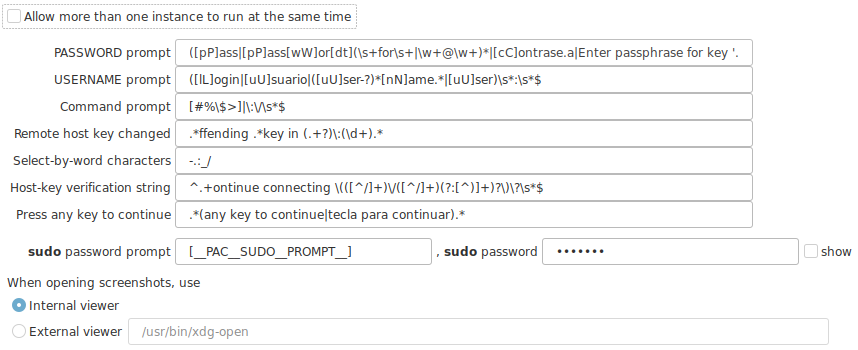

Advanced Options¶

Customize to your language
Some of this options might need to be customized to work with your language, or more detections might be needed for multiple languages.
- PASSWORD prompt : Regular expression to identify your terminal password prompt.
- USERNAME prompt : Regular expression to identify your terminal username prompt.
- Command prompt : Regular expression to identify your terminal prompt.
- Remote host key changed : Regular expression to identify when a message of a conflicting known host was sent by the terminal.
- Select by word characters : List of characters that identify a "word". This is used when double clicking on the terminal. The selection will expand as long as any of the listed characters appears next to the doubleclick location. Important, this is "not" a regular expression, is a simple list of characters
- Host key verification string : Regular expression to identify when a message of a new known host was sent by the terminal.
- Press any key to continue : Regular expression to identify when a request to continue has been sent by the terminal.
- sudo password prompt : *pending
-
sudo password : *pending
-
When opening screenshots, use
- The internal viewer
- And external viewer. You must the the path and name of the application.
Prompts (Password, Username, etc.)¶
The original prompt command for detecting a password request could not work for some of your servers, depending on the : language settings, customized distribution prompt changes, etc.
In this cases you may need to adjust your prompt regex.
For example, the original prompt regex for password detections is:
([pP]ass|[pP]ass[wW]or[dt](\s+for\s+|\w+@\w+)*|[cC]ontrase.a|Enter passphrase for key '.+')\s*:\s*$
While this prompt work very will in general for english platforms, it has some minor issues in other latin languages where the grammar changes.
In the above example, the expression expects that immediately after the "password" word detected e ":" should come up. Which is not true for spanish.
# Enlish prompt
(current) UNIX Password:
# Spanish prompt
(actual) Contraseña de UNIX:
Below is a more general regular expression (but not complete)
(?mi)(pass(word|phrase)|contraseña).*?:\s*$
But this expression is limited to English and Spanish. You may need to edit the Spanish word contraseña or add more words in different languages to the regular expression.
For example:
(?mi)(pass(word|phrase)|contraseña|passwort).*?:\s*$
or
(?mi)(pass(wor[dt]|phrase)|contraseña).*?:\s*$
Recommended Password prompt
(?mi)(pass(word|phrase)|contraseña).*?:\s*$